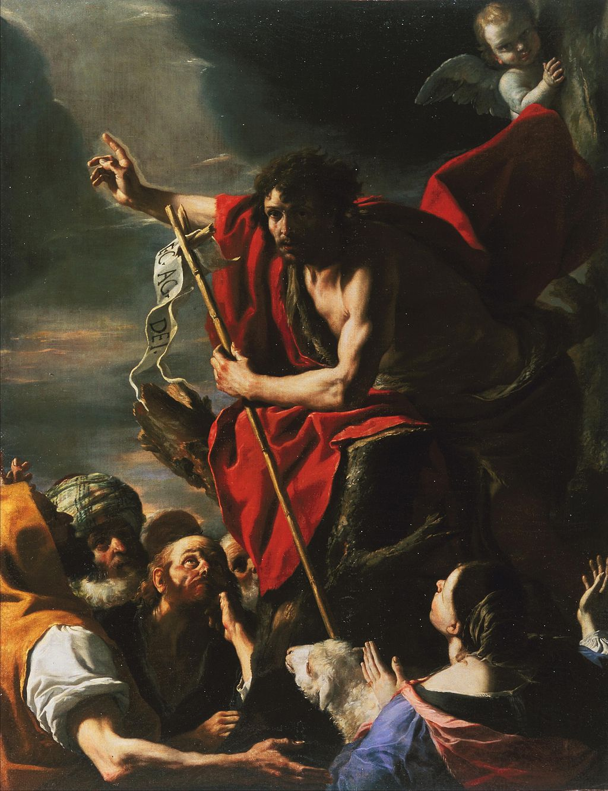

<head>
<meta charset="UTF-8" />
<meta name="keywords" content="drawing, painting" />
<meta name="description" content="drawings by Sunjy" />
<title>Sunjy</title>
<link rel="shortcut icon" type="image/x-icon" href="../../mImages/mCommon/favicon.ico" media="screen" />
<link rel="stylesheet" type="text/css" href="../../mCsses/mCommon/mCssA.css" />
<link rel="stylesheet" type="text/css" href="../../mCsses/mCommon/mCssB.css" />
<link rel="stylesheet" type="text/css" href="../../mCsses/mCommon/mCssC.css" />
<link rel="stylesheet" type="text/css" href="../../mCsses/mCommon/mCssD.css" />
<link rel="stylesheet" type="text/css" href="../../mCsses/mContent/mCssA.css" />
<link rel="stylesheet" type="text/css" href="../../mCsses/mContent/mCssB.css" />
<link rel="stylesheet" type="text/css" href="../../mCsses/mContent/mCssC.css" />
<link rel="stylesheet" type="text/css" href="../../mCsses/mContent/mCssD.css" />
</head>
<script type="text/javascript" src="../../mScripts/mContent/mContentAA.js" /></script>
<script type="text/javascript" src="../../mScripts/mContent/mContentAB.js" /></script>
<script type="text/javascript" src="../../mScripts/mContent/mContentAC.js" /></script>
<script type="text/javascript" src="../../mScripts/mContent/mContentAD.js" /></script>
<script type="text/javascript"></script> 
<script type="text/javascript">
document.write('<div class="mImgAbsolute"></div>');
/*
document.write('<p class="mFontSizeBColor" />From a white paper...</p>');
document.write('<table class="center"><tr><td>');
document.write('');
document.write('</td></tr></table>');
*/
</script>


<script type="text/javascript">
document.write('<p class="mFontSizeBColor" />St. John the Baptist Preaching</p>');
document.write('<p class="mFontSizeSColor" />“St. John the Baptist Preaching” by Mattia Preti depicts John as the forerunner of Jesus, who announces Jesus’ coming. This painting shows John’s prophetizing and preparing the people for Jesus’ ministry as symbolized by his staff, which has a cross on top with a message.<br><br>St. John is shown preaching and pointing to the heavens urging his audience to remember that their reward is waiting in heaven, and their salvation is in God’s hands. Preti has included the symbols for St. John the Baptist frequently is shown in Christian art, identifiable including the reed cross, his camel’s skin clothing, and lamb.<br><br>The artists, Mattia Preti (1613 – 1699) was a Baroque artist who worked in Italy and Malta. His early apprenticeship is said to have been with the “Caravaggist” Giovanni Battista Caracciolo, which accounts for his lifelong interest in the style of Caravaggio. Preti was fortunate to enjoy a long career and have a considerable artistic output. He was appointed a Member of the Order of Saint John.<br></p>');
document.write('<table class="center" /><tr><td>');
document.write('<br>St. John is shown preaching and pointing to the heavens urging his audience to remember that their reward is waiting in heaven, and their salvation is in God’s hands. Preti has included the symbols for St. John the Baptist frequently is shown in Christian art, identifiable including the reed cross, his camel’s skin clothing, and lamb.<br><br>The artists, Mattia Preti (1613 – 1699) was a Baroque artist who worked in Italy and Malta. His early apprenticeship is said to have been with the “Caravaggist” Giovanni Battista Caracciolo, which accounts for his lifelong interest in the style of Caravaggio. Preti was fortunate to enjoy a long career and have a considerable artistic output. He was appointed a Member of the Order of Saint John.<br>" />');
document.write('</td></tr></table>');
</script>


